Personajes Principales
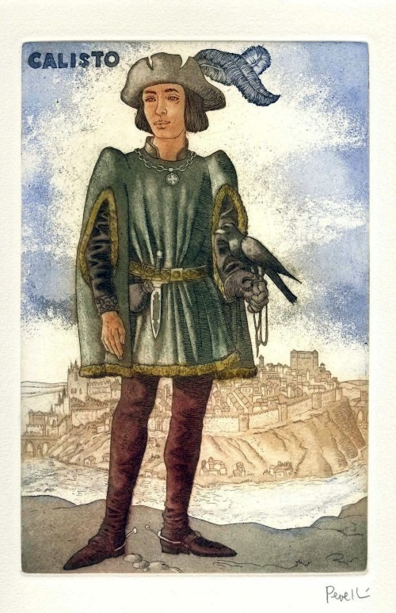
Calixto
Se caracteriza por ser un romántico empedernido, con mucha pasión y locura por su amada y representante del amor cortés; sin embargo, también refleja mucha inseguridad y egoísmo, lo que le hace perder fácilmente el ánimo y la firmeza.
A través de él se puede apreciar el peligro que conlleva la pasión y amor extremista, pues son estos sentimientos los que lo conducen a llevar a cabo acciones que lo convierten en un personaje trágico.
v
Sus únicos intereses son el amor y la codicia, por lo que utilizó a sus criados y a la hechicera alcahueta para el cumplimiento de sus deseos. Así fue como Calisto acudió a Celestina, una vieja hechicera que lo ayuda a que el amor de este joven sea correspondido.
Al final de la obra Calisto sufre un accidente que acaba con su vida: cae por las escaleras mientras huye de la casa de su amada, Melibea.
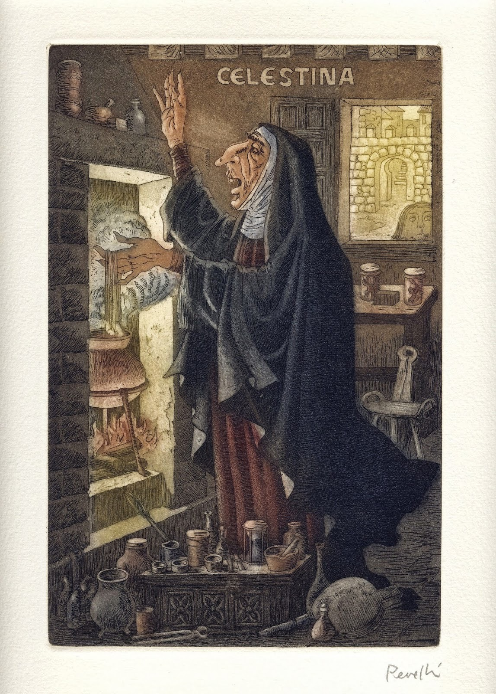
La Celestina
Es considerada la protagonista de la obra. Aunque esta gire en torno al amor de los dos jóvenes, Celestina pasó al recuerdo de los lectores del libro como la alcahueta del amor; no obstante, en la novela ejerce el papel de bruja, hechicera.
Su motivación es el dinero, el éxito y la lujuria. Es sumamente inteligente, pero también es egoísta, falsa, desleal y codiciosa.
Es de origen humilde, con un largo pasado atrás. En sus tiempos de juventud fue prostituta, adiestrada en ese mundo por la madre de Pármeno.
Sin embargo, en el momento en el que se desarrolla la historia, ya con una edad más avanzada, ejercía otros oficios como “labrandera, perfumera, maestra de hacer afeites y hacer virgos, alcahueta y un poquito hechicera”.
Se muestra orgullosa de su oficio durante toda la obra. No se arrepiente de su pasado, pues su larga trayectoria es lo que la ha llenado de tanta experiencia.
Conoce todas las debilidades y pasiones humanas por lo que, con su gran conocimiento y astucia, controla psicológicamente a la mayoría de los personajes y es el hilo que une a los poderosos y a los criados.
Pese a su gran sabiduría, su codicia es la que le dicta la muerte, hecho que ejemplariza el castigo a la avaricia: muere en manos de Sempronio y Pármeno —criados de Calisto— por no querer hacer entrega de un dinero.
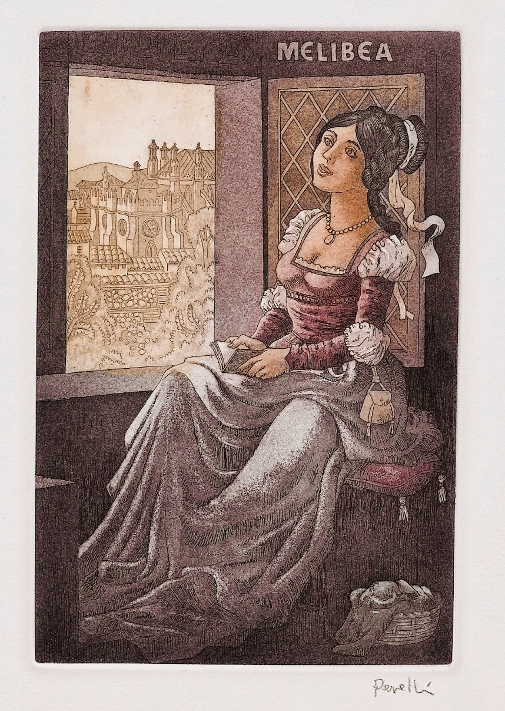
Melibea
Comienza siendo una joven oprimida por las obligaciones sociales que no le permitían vivir plenamente el amor de Calisto.
No obstante, al avanzar la novela este personaje evoluciona psicológicamente y se revela que su personalidad no es realmente de fácil opresión, y pronto se encuentra con su amor; luego de ese encuentro quedó completamente enamorada.
Melibea, al igual que el resto de los personajes, se muestra muy individualista, preocupada por actuar de manera que pueda obtener lo que quiere. Es compleja y temerosa de defraudar a sus padres y perder su honra, por lo que no duda en actuar a sus espaldas para evitar conflictos graves.
Es un personaje muy atractivo e interesante, con una pasión más carnal y menos literaria que la de Calisto, con rasgos físicos que representaban los ideales de belleza propios de la época.
Posteriormente a la muerte de su gran amor, Melibea sufre una crisis emocional muy fuerte, le confiesa a su padre el amorío que se había desarrollado entre ambos y se suicida.
Personajes Secundarios
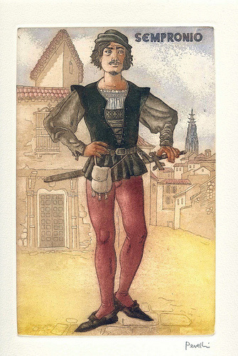
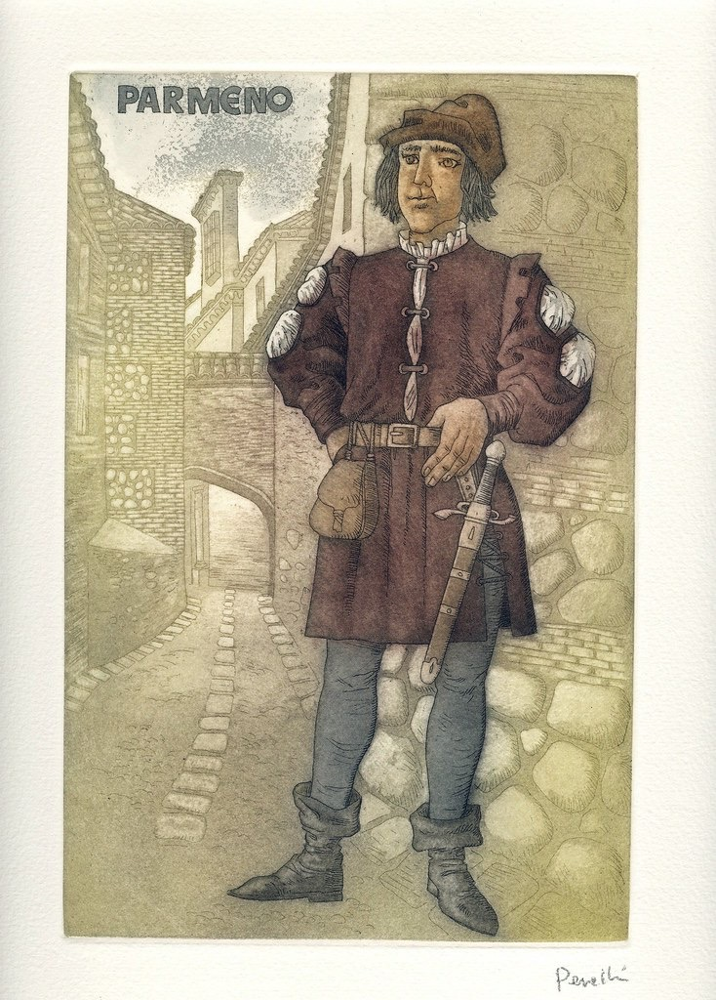
Sempronio y Pármeno
Ambos eran criados de Calisto pero tenían diferencias destacadas entre ellos. Sempronio se caracteriza por la agresividad, egoísmo, codicia, deslealtad, ambición y muestra menos afecto por su amo, gracias a su personalidad rencorosa y la búsqueda de su propio beneficio.
En cambio, Pármeno se muestra al inicio de la obra como un criado leal, preocupado por mantener satisfecho y seguro a Calisto.
Al ser de personalidad débil, se dejó arrastrar fácilmente al mundo de la avaricia, la mala intención y la lujuria, pues empezó a buscar una mejor condición económica y más placer sexual luego de que Celestina le prometiera el amor de Areúsa, quien se convirtió en su amante.
Sempronio se aprovechó de Calisto y lo engañó. Se alió con Celestina para planificar un encuentro entre el amo y su amada, y sacarle beneficios económicos.
Es este dinero el que la bruja posteriormente se niega a compartir, y son este par de criados quienes cometen el crimen de asesinar a Celestina. Eventualmente pagan por ello: mueren degollados en la plaza del pueblo por haber matado a la alcahueta.
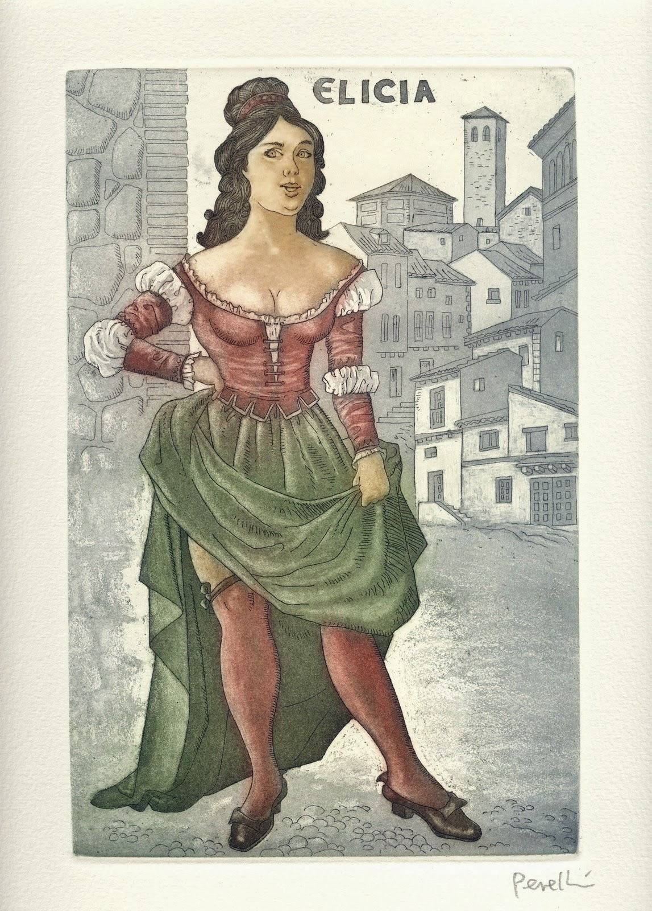
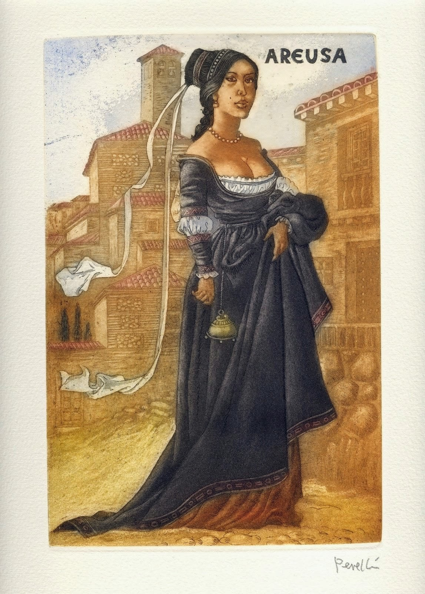
Elicia y Areúsa
Elicia es familia de Celestina, viven juntas y es su pupila, al igual que Areúsa. Ambas son prostitutas y Elicia, a pesar de ser amante de Sempronio, mantenía relaciones con otros hombres sin remordimiento alguno.
Elicia vive la vida sin preocupaciones excesivas por su futuro y aspectos que tengan que ver más allá del placer, hasta que Celestina muere y esta se ve obligada a tomar más responsabilidad y planificación.
Areúsa, amiga de Elicia, se muestra muy individualista y rencorosa, ocupada únicamente en cumplir sus antojos. Como consecuencia de la petición de la hechicera, Areúsa se convirtió en amante de Pármeno cuando Centurio se fue a la guerra, pero su verdadero amor es el soldado.
Tristán y Socia
Son fieles criados y amigos de Calisto luego de la muerte de Pármeno y Sempronio. Se trata de jóvenes ingenuos, humildes, muy leales y comprometidos con su amo, quienes lo protegen hasta el final de su vida.
Sosia se enamoró profundamente de Areúsa y esta logró sacarle información acerca de Calisto y su gran amada, Melibea. Por su parte, Tristán es muy astuto y apegado a Calisto, por lo que la muerte de su amo lo afectó profundamente.
Alisa y Pleberio
Son los padres de Melibea y el reflejo de un matrimonio burgués. Preocupados por mantener su posición social y seguir con las tradiciones de la época, no se veían involucrados en el drama que vivía su hija y no mantenían una relación estrecha.
Alisa, muy autoritaria y despreocupada por Melibea, se ocupaba de mantener siempre atendido y a gusto a Pleberio, mientras que él se veía consumido por el trabajo.
Pleberio es la encarnación del padre ausente en el día a día de su hija pero profundamente preocupado por su bienestar económico, pues se encargaba de que a Melibea no le faltara nada.
La pareja confiaba plenamente en su hija, lo que le facilitaba a Melibea poder cumplir sus propios deseos sin tener que esforzarse por ocultar todo a sus padres, mientras que ellos le planificaban una boda con otro hombre de su misma clase, únicamente por intereses.
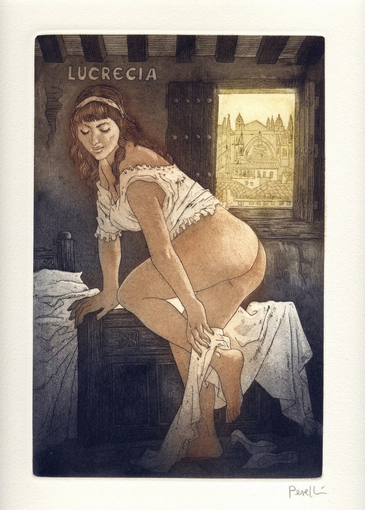
Lucrecia
Es familia de Elicia y fiel criada de Melibea. Siempre velaba por el bienestar de su ama y trató de advertirle acerca de los movimientos de Celestina. Fracasó en este intento, pero luego se ocupaba de guardar el secreto del amorío y se convirtió en cómplice de todas las escapadas de la pareja.
Durante el desenlace de la obra, nunca mostró un acto de deslealtad hacia Melibea y sus padres; esto la diferenció mucho de los iniciales criados de Calisto, quienes se encargaron de engañarlo y sacar el mayor provecho posible.
Sin embargo, se le acusaba de ser cómplice de las acciones de Celestina a cambio de polvos y lejía, únicamente por el hecho de no evitar definitivamente el plan de la hechicera.
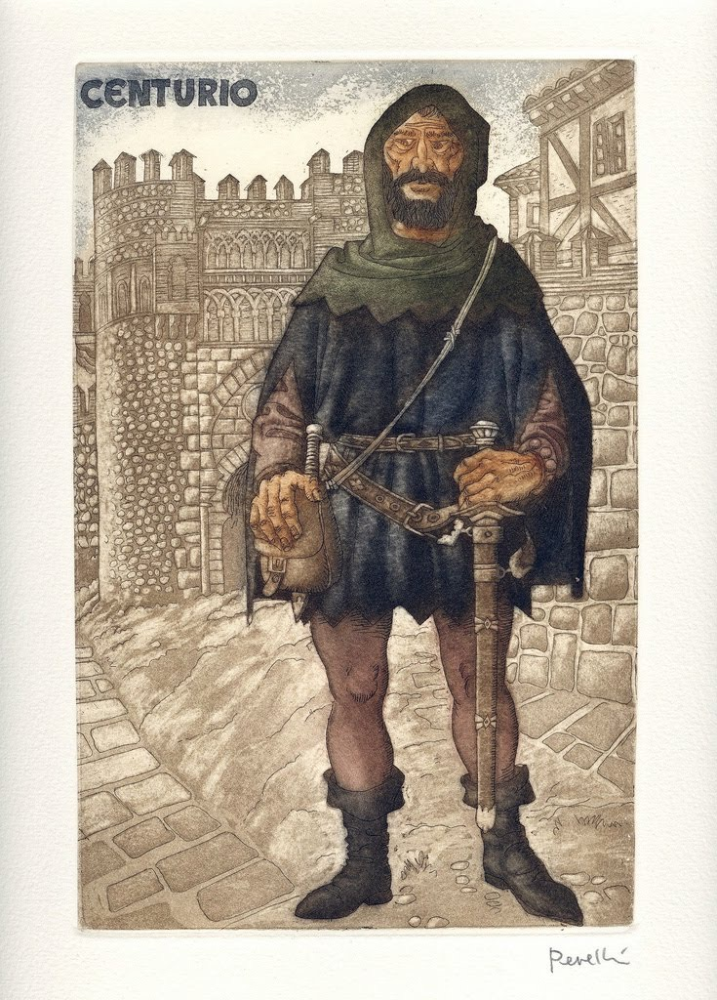
Centurio
Es un soldado de muy mal carácter, conocido como rufián, malhechor y bravucón. Su gran amor es Areúsa, quien es su fiel amante, aunque Celestina la llevó a involucrarse con Pármeno mientras que Centurio se encontraba en la guerra.
Incluso es considerado el responsable de la muerte de Calisto, después de que las prostitutas Elicia y Areúsa le pidieran asesinarlo para vengar la muerte de los criados de Calisto. Centurio no logró cumplir con los deseos de las damas, pues Tristán y Sosia lograron ahuyentarlo
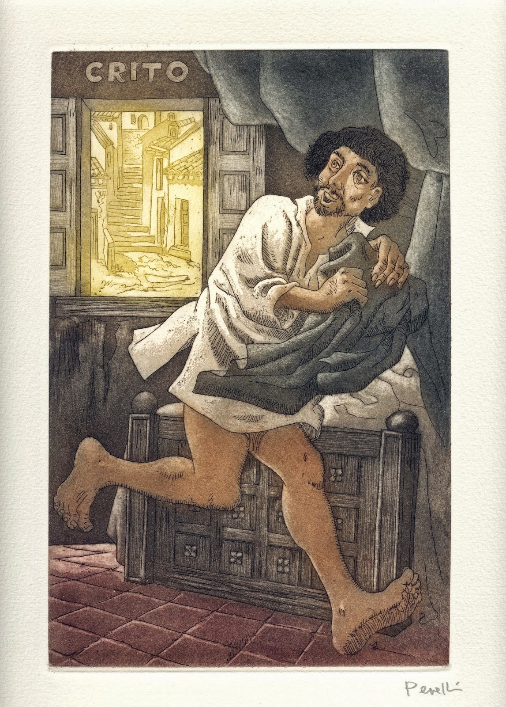
Crito
es el amante de Elicia. Es escondido por Celestina para que no se entere Sempronio de esto. Su principal misión en la obra es descubrir los falsos sentimientos de amor que tiene Elicia sobre Sempronio.
Relaciones entre Personajes
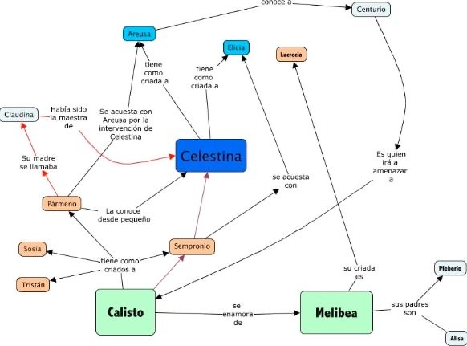
Sociales:
Entre señores y criados. Son principalmente:
Calisto y sus criados:
los criados mantienen una relación de fidelidad hacía Calisto, sobretodo Pármeno. Estos le desobedecen alguna vez o le roban la comida. Es una relación de confianza, ya que Calisto confía en ellos y estos le advierten o le aconsejan sobre Celestina. Le acompañan todas las noches a ver a Melibea.
Melibea y su criada, Lucrecia:
mantienen una relación muy buena, ya que esta es cómplice de Melibea, es decir, que le ayuda a ver a su amado sin que se enteren sus padres. Lucrecia advierte a Melibea de cómo es Celestina. Esta criada siempre esta con Melibea y le acompaña todas las noches a ver a Calisto.
Amorosas
Melibea y Calixto
Es una relación que ha sido conseguida por Celestina. Calisto esta enamorado de Melibea pero con esta relación no busca el matrimonio, sino el placer o el gozo, mientras que Melibea al principio rechaza a Calisto, pero luego vive para él. Esta relación tiene un final triste, ya que al morir Calisto, Melibea se suicida por el amor tan grande que siente hacia él.
Pleberio y Alisa:
Estos son los padres de Melibea, están felizmente casados y muy enamorados, a pesar de que contrajeron matrimonio cuando eran jóvenes, como un matrimonio de conveniencia.
Sempronio, Elicia y Crito:
Sempronio es el amigo de Elicia el cual esta enamorado de ella, pero de ella podemos ver que sus sentimientos amorosos hacia éste son falsos y lo único que busca en Sempronio es dinero, ya que tiene un amante que es Crito.
Pármeno, Areúsa y Centurio:
Entre Pármeno y Areúsa hay una relación de amor, es muy corta debido a la precipitada muerte de éste. Cuando muere Pármeno aparece un hombre, Centurio, que esta enamorado de Areúsa. Ésta lo rechaza, pero luego como se quiere vengar de Melibea y Calisto va a pedirle perdón y le dice que si mata a Calisto ella lo perdonará. Entonces éste accede a la petición de Areúsa.
Economicas
Los criados y señores:
Estos trabajan especialmente por el afán de conseguir dinero. A veces roban a sus señores.
Los criados y Celestina:
Ambos personajes son muy avariciosos y egoístas que hacen lo que haga falta por dinero. Estos por ambiciosos acaban muriendo. Al principio la relación que mantiene para sacar el dinero a Calisto es buena, pero cuando los criados van a pedir a Celestina su parte del dinero y ella no se lo quiere dar, estos enfurecidos la matan y ellos acaban muriendo por no caer en manos de la justicia.
Prostitutas y Celestina:
La relación que hay entre las prostitutas y Celestina parece que es buena, ya que éstas tienen a Celestina como por una madre que les ha enseñado todo lo que saben y las protege. Pero esta relación es favorable para Celestina ya que son como instrumentos para ella, es decir, que las explota y obtiene unos beneficios.
Referencias
https://www.lifeder.com/personajes-celestina/
https://html.rincondelvago.com/la-celestina_fernando-de-rojas_25.html